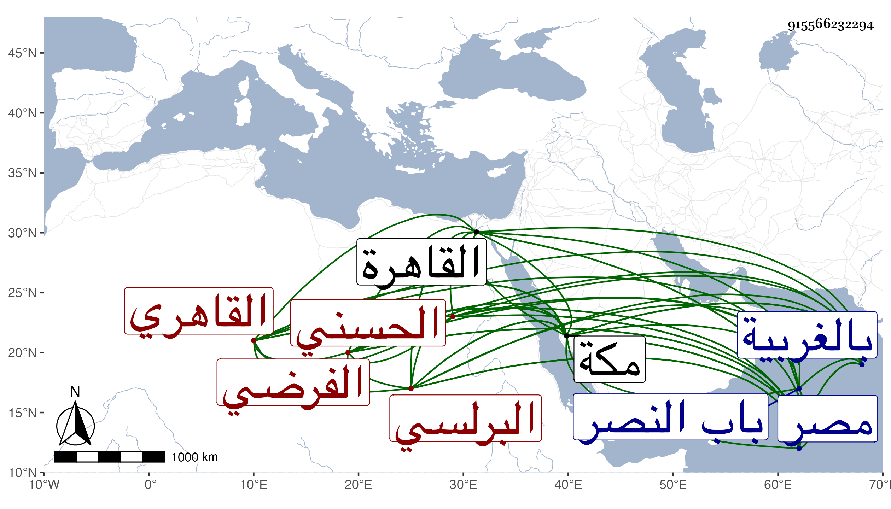

0902Sakhawi.DawLamic.ITO20230111-ara1.EIS1600.915566232294
Biography ID: 915566232294
إبراهيم بن أبي بكر بن محمد برهان الدين البرلسي الحسني نسبة لبلدة يقال لها محلة حسن بالغربية من أعمال مصر القاهري الفرضي ذكره التقي الفاسي في تاريخ مكة وقال أنه سمع بها في عشر السبعين وسبعمائة على ألاميوطي والنشاوري وغيرهما وأقرأ بها الفرائض والحساب وكان بارعا في ذلك أخذه عن الكلائي صاحب المجموع الشهير وانتفع به الناس وكانت مجاورته بها نحو عشرين سنة متوالية إلا أنه تردد في بعض السنين لمصر طلبا للرزق وأدركه أجله بها إثر قدومه لها في ثالث عشرى المحرم سنة اثنتين ودفن فيما أحسب بمقابر باب النصر وقد قارب الستين فيما أحسب . قلت وقد ذكره شيخنا في إنبائه باختصار فقال صاحب الكلائي سكن القاهرة ثم مكة فانتفع به المكيون في الفرائض .
